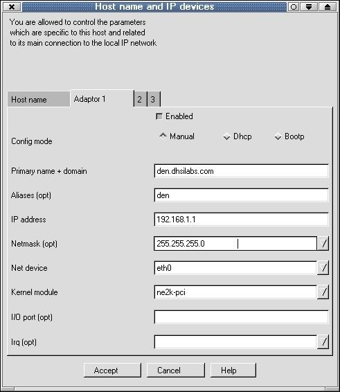
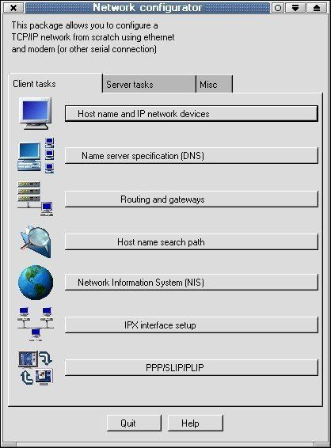

Более
подробно о настройке сети под Linux...
[Денис Колесниченко
]
1. Установка сетевой платы
Для начала авторизуйтесь в системе под root'ом. Настройка сети
включает в себя следующие этапы:
- установка модуля сетевой платы
- настройка параметров сети
Модуль сетевой платы уже должен быть установлен, кроме того
случая, когда сетевая плата приобреталась после установки системы. Запустите
конфигуратор DrakConf. Сначала запустите определение оборудования, чтобы
убедиться, что сетевая плата распознается системой. Для этого щелкните на кнопке
Настройка оборудования и согласитесь на определение устройств ISA (Detect ISA
devices).
Убедившись, что в списке слева присутствует ваш сетевой
адаптер, можно приступать к настройке сети. Нажмите на кнопку Настройка сети
(или выполните команду netconf - кому как нравится).

Далее в окне Network configurator щелкаем на кнопке
Basic host information и в открывшемся окне вводим имя машины, затем на
вкладке Adaptor 1 следует его (адаптер) активизировать (Enabled). Затем
водим информацию о нашей сети и о нашей плате (IP адрес, сетевая маска, IO Port,
Irq). В поле NetDevice укажите тип сетевого устройства - в нашей случае eth0 (от
Ethernet), а в поле Kernel Module - имя модуля ядра, которое соответствует
вашему сетевому адаптеру (например модуль ne2k-pci соответствует плате NE2000
PCI).
Внимание! Если Вы используете сетевую плату PCI (например,
ne2k-pci) IO Port и IRQ устанавливать не нужно!
Большинство сетевых плат совместимо с NE2000 или NE2000-PCI.

Затем возвращаемся к окну конфигуратора сети и настраиваем DNS.
Активизируем DNS, вводим IP адреса сервера(ов) и перечисляем нужные нам домены.
Нужную информацию можно узнать у администратора.
Если у вас небольшая домашняя сеть, то скорее всего, сервера
DNS у вас не будет, а для преобразования IP
адресов в имена машин служит
файл /etc/hosts
Тогда ваша задача еще проще - откройте этот файл в любом
текстовом редакторе и добавьте строку типа
IP_Addr hostname
где IP_Addr
- ваш IP адрес, а hostname - имя вашей машины
Также туда следует добавить
адреса и имена машин в вашей сети.
Затем нужно установить адрес шлюза (gateway) по умолчанию
(Routing and gateways)
При использовании сервера доменных имен еще
нужно установить порядок поиска адресов. Это можно
сделать в окне Name
service access сетевого конфигуратора (Host name search path): hosts, dns
Это означает,
что система сначала будет использовать локальную базу данных
адресов, а затем обращаться к серверу
DNS. Не отключайте режим Multiple
IPs for one host
Настройки DNS хранятся в файлах /etc/hosts.conf и
/etc/resolv.conf
Это все можно сделать и вручную - без конфигуратора
DrakConf (я это пишу на тот случай, когда у вас не
запускается сервер Х) -
программа может запускаться и из-под консоли.
| Если конфигуратор DrakConf у вас недоступен (у вас не запущен
сервер X или вы используете другую версию Linux)
Добавим модуль сетевой платы
insmod rtl8139.o
(для Realtek 8139)
insmod ne2k-pci.o (для NE2000 PCI)
Программа ifconfig используется для конфигурации
сетевого интерфейса, а route - таблицы маршрутизации.
ifconfig eth0 192.168.1.1 up - "подымаем" сетевой
интерфейс
Более корректно:
/sbin/ifconfig eth0 ${IPADDR}
broadcast ${BROADCAST} netmask ${NETMASK}
Теперь добавим нашу сетевую плату в таблицу
маршрутизации
/sbin/route add -net ${NETWORK} netmask ${NETMASK}
eth0
Указываем шлюз по-умолчанию
/sbin/route add
default gw ${GATEWAY} netmask 0.0.0.0 metric 1
Теперь нужно перезапустить демон xinetd (или inetd)
| |
Теперь можно проверить настройки сети. Для этого воспользуемся
командой
ping 127.0.0.1
127.0.0.1 - адрес обратной петли, т.е.
все пакеты, которые отправляются на этот ардес на самом деле не
выходят за
пределы локальной машины и возвращаются к ней. Этот адрес зарезервирован для
служебных
целей и может служить для проверки конфигурации сети. Если у вас
возникли проблемы с этим адресом,
активизируйте сервис
network. При правильной настройке ваша таблица маршрутизации должна
выглядеть
подобным образом
[root@dhsilabs /etc]# route
Kernel IP
routing table
Destination Gateway Genmask Flags Metric Ref Use Iface
192.168.1.1 0.0.0.0 255.255.255.0 U 0 0 12 eth0
127.0.0.1 0.0.0.0
255.0.0.0 U 0 0 1 lo
Теперь можно пропинговать свою машину по IP адресу ее
интерфейса eth0 и по ее имени (ping
192.168.1.1 ping dhsilabs или ping
localhost)
Убедившись, что проблем с локальными настройками не возникает,
можно пропинговать какую-нибудь
удаленную машину из вашей сети.
Возникновение проблем на этот этапе обусловлено следующим:
неправильность настроек на удаленной машине
неисправность
сетевого оборудования
удаленная машина просто выключена :)
2. Настройка шлюза
Настраиваем сетевые интерфейсы:
например у нас есть две
сетевые платы eth0 и eth1
ifconfig eth0 192.168.1.1 up
ifconfig eth0
192.168.2.1 up
Нам нужно обеспечить маршрутиризацию между подсетями
192.168.1.0 и 192.168.2.0
Объявляем, что машины, которые находятся в нашем
локальном сегменте 192.168.1.* сидят на первом
интерфейсе и общаться с ними
нужно напрямую
route add net 192.168.1.0 192.168.1.1 netmask
255.255.255.0 0
А с машинами с адресами 192.168.2.* будем разговаривать
через eth1
route add net 192.168.2.0 192.168.2.1 netmask 255.255.255.0
0
Последний параметр - это метрика. Ее можно понимать как "расстояние до
шлюза-назначения" или "сколько
пересадок между шлюзами придется сделать
пакету по пути и обратно). Т.к. адреса 192.168.1.1 и 192.168.2.1
являются
нашими собственными адресами, то метрика равна 0
Сетевые пакеты для IP-адресов, которые не лежат в нашей
локальной сети, будем отправлять на машину
192.168.1.11, а она сама будет
разбираться, что с ними делать
route add default 192.168.1.11 1
Обратите внимание на значение метрики = 1
3. Настройка сервера DNS (BIND)
Напомню, что основной задачей сервера доменных имен (Domain
Name System) является преобразование
мнемонических имен машин в IP-адреса и
обратно.
Учитывая, что на обращение к серверу DNS провайдера требуется
10-15, а иногда и все 30 секунд (это
зависит от загрузки сети и от скорости
соединения), установка сервера DNS в локальной сети с выходом в
Internet
является просто необходимой.
Обычно сервер DNS устанавливается на шлюзе,
который используется для выхода в Internet.
Прежде чем приступить к
настройке сервера, нужно определить запущен ли он
ps -ax | grep named
Если он запущен, его нужно остановить (или с помощью команды kill или ndc),
а если он вообще не
установлен, то вам придется установить пакет bind.
Обратите внимание, что исполнимый файл
называется named, а сам пакет
- bind
Для работы сервера должен быть активизирован сервис network
Теперь приступим к непосредственной настройке сервера
В файле /etc/named.conf содержится основная информация о
параметрах сервера
logging {
category cname {null; };
};
options {
directory "/var/named";
};
zone "." {
type hint;
file "named.ca";
};
zone "dhsilabs.com" {
type master;
file "dhsilabs.com";
notify no;
};
zone "0.0.127.in-addr.arpa" {
type master;
file
"named.local";
};
zone "1.168.192.in-addr.arpa" {
type master;
file
"192.168.1";
notify yes;
};
Основной каталог сервера - /var/named. В нем сервер будет
искать файлы named.ca, dhsilabs.com, named.local,
192.168.1
Обслуживаемая нашим сервером зона (домен) - dhsilabs.com
Файл named.ca - корневой кэш - содержит информацию о корневых
серверах DNS. Позже мы займемся его
обновлением.
Файл dhsilabs.com (для преобразования имен в IP-адреса)
@ IN SOA den.dhsilabs.com. hostmaster.dhsilabs.com. (
93011120 ; серийный номер
10800 ; обновление каждые 3 часа
3600 ;
повтор каждый час
3600000 ; хранить информацию 1000 часов
86400 ) ; TTL
записи - 24 часа
IN NS den.dhsilabs.com.
IN A 192.168.1.1
IN MX 150
den.dhsilabs.com.
den IN A 192.168.1.1
IN HINFO INTEL CELERON (LINUX)
IN
MX 100 den
IN MX 150 evg.dhsilabs.com.
ns IN CNAME den.dhsilabs.com.
www IN CNAME den.dhsilabs.com.
ftp IN CNAME den.dhsilabs.com.
mail
IN CNAME den.dhsilabs.com.
evg IN A 192.168.1.2
IN MX 100 den.dhsilabs.com.
localhost IN A 127.0.0.1
Запись NS обозначает name server.
A - IP - адрес
MX -
почтовик <приоритет> Чем ниже, тем выше приоритет
HINFO - сведения об
аппаратном обеспечении (заполнять не рекомендую)
TXT - прочие сведения
CNAME - каноническое имя, т.е. если вы в окне броузера введете
http://www.dhsilabs.com, то
обращение будет произведено к den.dhsilabs.com
Обратите внимание на точку в конце
@ IN SOA
den.dhsilabs.com. hostmaster.dhsilabs.com. (
Если точка не указана, то к
имени будет добавлено имя домена (т.е. dhsilabs.com)
Файл 192.168.1 или файл обратного соответствия
@ IN SOA den.dhsilabs.com. hostmaster.dhsilabs.com. (
93011120 ; серийный номер
10800 ; обновление каждые 3 часа
3600 ;
повтор каждый час
3600000 ; хранить информацию 1000 часов
86400 ) ; TTL
записи - 24 часа
@ IN NS den.dhsilabs.com
1 IN PTR den.dhsilabs.com
2.1.168.192 IN PTR evg.dhsilabs.com
Запись PTR используется для преобразования IP-адреса в имя.
Если указан не весь IP
1 IN PTR den.dhsilabs.com
то к нему будет
добавлен адрес подсети 1.168.192
IP-адреса указываются в обратном
порядке!
Для установки файла кэша можно установить пакет
caching-nameserver, а можно и получить самую новую
версию. Для этого
- подключитесь к Интернет
- запустите сервер DNS
Затем выполните команду
# nslookup | tee
ns
В ответ на приглашение программы nslookup введите две команды
> set q=ns (или set type=ns)
> .
На экране вы увидите список корневых серверов DNS, который
будет помещен в файл ns.
Для преобразования файла ns в формат named.ca
воспользуйтесь следующей программкой на awk reformat
#!/bin/awk
awk ' BEGIN {
/root/ { print ". IN NS " $4"." }
/internet/ { print $1"." " 999999 IN A " $5 }
END '
Использовать ее нужно так reformat <source file>
<output file>
reformat ns named.ca
Теперь осталось скопировать named.ca в каталог /var/named
4. Настройка Proxy
Нужно огвориться, если вы являетесь единственным клиентом в
сети - особого смысла устанавливать
прокси нет, т.к. он только замедлит
быстродействие. Если же в вашей сети хотя бы 3 клиента, то, установив
кэширующий прокси, вы не только увеличите скорость доступа к Интернет, а и
немного сэкономить.
Установите пакет squid
Осталось настроить и запустить его.
Для этого нужно отредактировать файл конфигурации
/etc/squid/squid.conf
Сначала укажем адрес прокси провайдера
cach_peer
proxy.your_isp.com
Устанавливаем объем ОЗУ, который будет используется прокси
cache_mem
Если вы планируете использовать этот компьютер еще и для
других целей, кроме прокси, не
устанавливайте здесь более трети физического
объема ОЗУ
Теперь укажем, где будет располагаться кэш. Если у вас
несколько жестких дисков, разместе кэш на самом
быстром из них
cache_dir
/usr/local/squid 2048 16 256
Первое число - это количество Мб для кэша
Укажем хосты, с которых разрешен доступ к прокси
acl
allowed_hosts src 192.168.1.0/255.255.255.0
acl localhost src
127.0.0.1/255.255.255.255
разрешенные SSL порты: acl SSL_ports port 443 563
запретим метод CONNECT для всех портов, кроме указанных в acl
SSL_ports:
http_access deny CONNECT !SSL_ports
и запретим доступ всем, кроме тех, кому можно:
http_access
allow localhost
http_access allow allowed_hosts
http_access allow
SSL_ports http_access deny all
пропишем пользователей, которым разрешено пользоваться squid
(den, admin, developer):
ident_lookup on
acl allowed_users user den
admin developer
http_access allow allowed_users
http_access deny all
Тэги maxium_object_size и maxium_object устанавливают
ограничения на размер передаваемых объектов.
Ниже приведен пример запрета доступа к любому URL, который
соответстует шаблону games и разрешения
доступа ко всем остальным
acl
GaMS url_regex games
http_access deny GaMS
http_access allow all
5. Конфигурирование IpChains (Firewall)
Конфигурирование firewall является нетривиальной задачей (в
трех строчках не опишешь) и если вы действительно заботитесь о безопасности
вашей сети, рекомендую прочитать
подробное руководство по настройке IPChains. В этом руководстве очень
подробно описывается базовая настройка firewall, объясняются основые принципы
фильтрации, приведены примеры по настройке.
[Источник Softterra.ru]